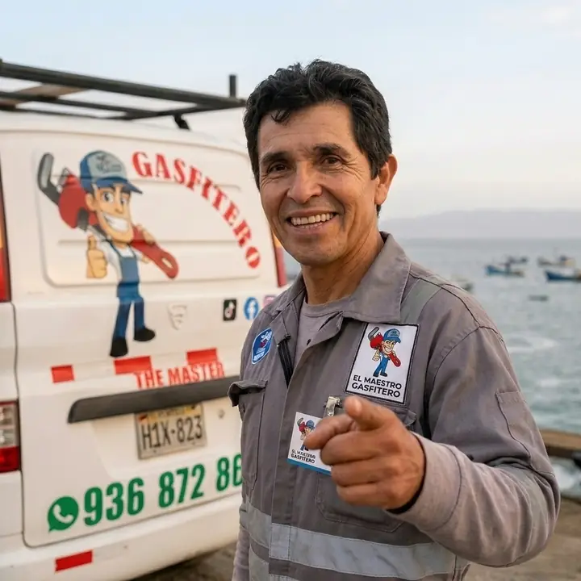

Gasfiteria profesional en Lima
Soluciones confiables para fugas, instalaciones y mantenimiento.
Fernando ayuda a familias y negocios con atencion rapida, diagnostico claro y trabajos de gasfiteria pensados para durar.
- Mas de 15 anos de experiencia practica
- Atencion por WhatsApp al +51 936 872 862
- Servicios para agua fria, caliente, tanques y desagues
Servicios principales
Ayuda rapida para los problemas mas comunes.
Estos son algunos de los servicios mas solicitados. La lista completa se carga desde un archivo JSON en la pagina de servicios.

Sobre Fernando
Experiencia real para casas, departamentos y negocios.
The Master, tambien conocido como Gasfitero Fernando, atiende reparaciones, instalaciones y mantenimiento general de plomeria. Su trabajo se centra en resolver el problema con cuidado, explicar las opciones y dejar el sistema funcionando correctamente.
- Deteccion y correccion de fugas de agua.
- Instalacion de griferias, duchas, tanques y bombas.
- Limpieza y desinfeccion de tanques y trampas de grasa.
Atencion directa
Describe tu problema y recibe una respuesta clara.
Usa el formulario para enviar el distrito, servicio y detalles del problema. Tambien puedes escribir por WhatsApp si se trata de una fuga o emergencia.